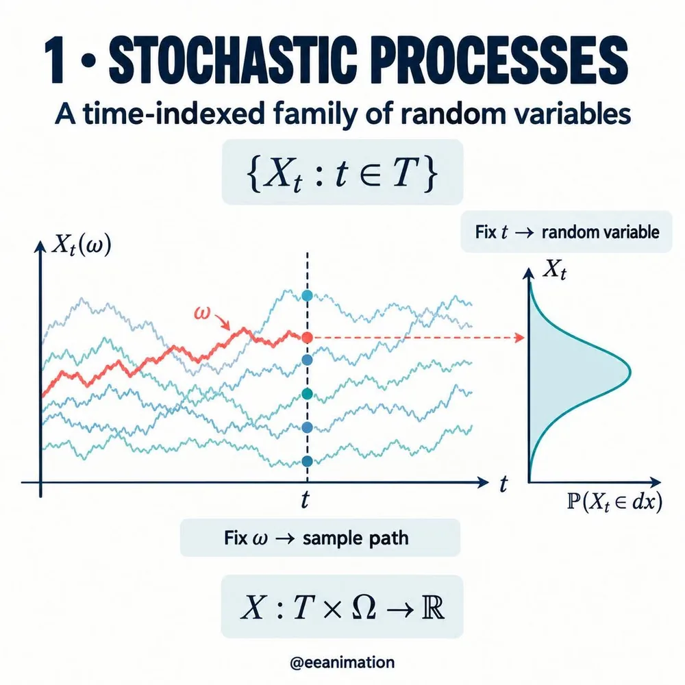

기둥 1 · 무작위를 기록하는 법 · 01장
확률변수와 퍼짐 — 주사위 하나에서 시작
결과가 매번 다른 수를 「평균」과 「퍼짐」 두 숫자로 붙잡는 법
결과가 매번 다른 수를 「평균」과 「퍼짐」 두 숫자로 붙잡는 법
핵심 질문 — 던질 때마다 결과가 다른 주사위를, 어떻게 숫자 몇 개로 설명할 수 있을까?
확률해석은 「매번 결과가 달라지는 것」을 다루는 수학이에요. 그 출발점은 주사위 하나입니다. 결과가 우연에 달린 수를 확률변수라고 부르고, 그 수를 기댓값(평균)과 분산(퍼짐) 두 숫자로 요약하는 법부터 배워요.
숫자 요약은 이 장의 예시 계산에서 나온 값입니다(실제 데이터가 아닌 설명용 값).
확률해석 교실 첫 시간입니다. 오늘은 주사위와 동전만 있으면 돼요. 행렬도 벡터도 안 나옵니다.
확률…해석이요? 이름이 벌써 무거워요. 저 따라갈 수 있을까요?
행렬·벡터, 복잡한 공식을 몰라도 됩니다. 그림을 움직여 보고, 밑줄 친 말을 누르면 뜻이 나옵니다.
결과가 우연에 달린 수. 시각 하나를 고정한 Xₜ도 확률변수예요(원자료 「Fix t → random variable」).
기댓값 = 값 × 확률의 합(긴 평균), 분산 = 평균에서 떨어진 거리 제곱의 평균, 표준편차 = √분산.
동전 ±1을 더해 가면 평균 0, 분산 n. 퍼짐은 √n — 이 시리즈 전체의 씨앗.
원자료(영어) 그림 02번을 한국어로 다시 그렸어요. 원자료에서 바로잡은 곳은 이 그림에 이미 반영했어요.
이 페이지 사용법: 밑줄 친 말을 누르면 뜻이 나옵니다(Esc로 닫기). 단계마다 그림을 직접 움직여 보고, 끝의 확인 퀴즈로 점검하세요. 앞 장: 오리엔테이션
박사가 짧게 강의하고, 단계마다 수강생이 그림을 직접 움직여 본 뒤 마지막에 확인 퀴즈(쪽지시험)를 풉니다.
첫 수업이니까 맨 앞자리요! 1조 동전조, 2조 주사위조 화이팅!
…주사위는 제가 가져왔어요. 열두 개.
「내일 주가는 모른다」로 끝내지 않고 「평균은 이 정도, 흔들림은 이 정도」로 말하려면 기댓값과 분산이 필요해요.
04장 브라운 운동은 「평균 0, 분산 t」, 06장 마팅게일은 「미래 평균 = 지금」, 08장 이토 공식은 「분산이 만드는 덤」으로 요약돼요.
동전 한 번은 확률변수 하나지만, 여러 번 던져 위치를 기록하면 시간에 따라 변하는 우연(02장 확률과정)이 됩니다.
이번 장의 단어 세 개(확률변수, 기댓값, 분산)는 마지막 장까지 계속 나와요. 처음엔 다 기억 못 해도 괜찮아요. 밑줄을 누르면 언제든 뜻이 다시 나옵니다.
상황 질문 — 주사위를 던져 나온 눈만큼 상금을 주는 놀이가 있어요. 한 판 하려면 얼마를 내는 게 공평할까요?
E[X]라는 글자가 무서워요. E는 뭐고 대괄호는 왜 있어요?
학교 수학으로 보면: 중학교 「평균」과 같아요. 다만 자료 대신 「확률」을 무게로 써서 평균을 내요.
| 식 조각 | 읽는 법 | 뜻 |
|---|---|---|
| X | 엑스 | 주사위 눈처럼 결과가 우연에 달린 수(확률변수) |
| P(X = 3) | 엑스가 3일 확률 | 주사위에서는 1/6 |
| E[X] | 이 엑스(엑스의 기댓값) | 값 × 확률을 모두 더한 것. 오래 반복한 평균 |
E[X] = 1×1/6 + 2×1/6 + 3×1/6 + 4×1/6 + 5×1/6 + 6×1/6
= (1 + 2 + 3 + 4 + 5 + 6) ÷ 6 = 21 ÷ 6 = 3.5
한 판에 3.5원을 내면 오래 했을 때 이득도 손해도 없어요
3.5는 주사위에 없는 눈인데도 평균은 3.5구나. 「한 번의 결과」가 아니라 「오래 했을 때의 평균」이라서요!
놀이공원 뽑기에서 한 번은 꽝, 한 번은 대박이어도, 하루 종일 지켜보면 손님 한 명이 받는 평균 상금은 거의 일정해요. 가게 주인은 그 평균으로 가격을 정해요.
결과가 우연에 달린 수를 확률변수 X라 하고, 값 × 확률의 합을 기댓값 E[X]라 해요. 많이 반복한 평균은 E[X]에 모여요(큰 수의 법칙).
「10번 던지기」와 「1000번 던지기」를 눌러 보세요. 평균 그래프가 어떻게 달라지나요?
10번만 던져도 충분해요. 평균은 금방 3.5가 나와요!
10번은 들쭉날쭉해. 1000번까지 눌러 보고 빨간 선을 봐.
원자료 1번 주제 「Stochastic processes」의 오른쪽 분포 그림이 바로 이 확률변수 하나의 모습이에요. 02장에서 자세히 봐요.

상황 질문 — 두 게임의 평균 상금이 똑같이 5원이에요. 그래도 어느 게임이 더 「무서운지」 숫자로 말할 수 있을까요?
거리를 왜 굳이 제곱해요? 그냥 더하면 안 돼요?
학교 수학으로 보면: 중학교 3학년 통계의 「분산과 표준편차」 그대로예요. 그냥 더하면 위(+)와 아래(−)가 지워져서 0이 되거든요.
| 식 조각 | 읽는 법 | 뜻 |
|---|---|---|
| X − E[X] | 엑스 빼기 평균 | 평균에서 얼마나 떨어졌나(편차) |
| Var(X) | 배리언스 엑스(분산) | 편차 제곱의 기댓값 E[(X − E[X])²] |
| σ = √Var(X) | 시그마는 루트 분산 | 표준편차. 원래 단위(원)로 돌아온 퍼짐 |
게임 B 상금 0, 5, 10 (확률 각 1/3), 평균 5
편차 −5, 0, +5 → 그냥 더하면 0 (쓸모없음)
제곱 25, 0, 25 → 평균 50 ÷ 3 ≈ 16.67 = 분산
표준편차 √16.67 ≈ 4.08원. 게임 A(4, 5, 6)는 √0.67 ≈ 0.82원
제곱하면 음수가 사라지고, 루트를 씌우면 다시 「원」 단위로 돌아오네요. 이건 외울 필요 없이 이해되네요.
버스 두 대가 평균 10분마다 와요. 한 대는 늘 9~11분, 다른 한 대는 2분 만에 오기도 하고 18분이 걸리기도 해요. 평균은 같아도 기다리는 사람 마음은 전혀 달라요.
평균에서 떨어진 거리 제곱의 평균이 분산, 그 제곱근이 표준편차예요. 확률해석에서 「흔들림의 크기」는 늘 이 숫자로 잽니다.
게임 A와 B를 번갈아 눌러 보세요. 평균선은 그대로인데 무엇이 바뀌나요?
평균이 같으면 같은 게임이죠. 저는 아무거나 할래요.
빨간 막대 길이를 봐. B는 평균에서 훨씬 멀리 떨어져 있어.
상황 질문 — 갈림길마다 동전을 던져 앞면이면 오른쪽, 뒷면이면 왼쪽으로 가는 산책을 해요. 10번 뒤 나는 어디쯤 있을까요?
S₁₀ 같은 아래 첨자는 왜 붙어요?
학교 수학으로 보면: 수열 aₙ의 아래 첨자와 같아요. S₁₀은 「10번째 걸음 뒤 위치」라는 이름표예요.
| 식 조각 | 읽는 법 | 뜻 |
|---|---|---|
| ξᵢ | 크시 아이 | i번째 동전 결과: 앞면 +1, 뒷면 −1 |
| Sₙ = ξ₁ + … + ξₙ | 에스 엔 | n번 던진 뒤 위치(합) |
| E[Sₙ] = 0, Var(Sₙ) = n | 평균 0, 분산 엔 | 평균은 늘 제자리, 퍼짐(분산)은 걸음 수만큼 커짐 |
한 걸음 ξ: 평균 (+1)×½ + (−1)×½ = 0, 분산 1²×½ + 1²×½ = 1
서로 영향 없는 걸음의 분산은 더해져요 → 4걸음 뒤 분산 4, 표준편차 2
4걸음 끝 위치: −4, −2, 0, 2, 4의 확률 1/16, 4/16, 6/16, 4/16, 1/16
0이 가장 흔하지만 6/16 = 37.5%뿐이에요
평균은 계속 0인데 퍼짐은 걸음 수만큼 커지는구나. 4걸음이면 표준편차 2, 100걸음이면 10!
술래잡기하다 눈을 가린 친구가 한 걸음씩 아무렇게나 움직이면, 평균적으로는 제자리지만 시간이 갈수록 출발점에서 멀리 떨어져 있을 가능성이 커져요.
동전 결과 ξᵢ를 차례로 더한 Sₙ을 무작위 걸음이라 해요. 시간마다 값이 하나씩 정해지는 확률변수의 줄, 즉 02장의 확률과정의 첫 예예요.
「10번」을 네 번 눌러 40걸음 뒤 위치를 보세요. 그리고 「새 경로」로 다시.
평균이 0이니까 40걸음 뒤에도 0 근처에 있을 거예요!
「새 경로」를 여러 번 눌러 봐. 끝 위치가 0에서 얼마나 멀리 가는지.
하루가 AI에게 「동전 걸음 100번 뒤 위치는 대략 어디쯤인가요?」라고 물었더니 이렇게 답했어요.
AI가 「평균이 0이니 0 근처」라고 하면, 퍼짐(표준편차)을 함께 물어보세요. 평균 하나로 결론 내는 답은 절반만 맞는 답입니다.
공정한 동전을 100번 던질 때 앞면이 「정확히 50번」 나올 확률을 두고 두 조교가 맞붙었어요.
「가장 흔한 결과이긴 해도 「정확히」 50은 10%도 안 될걸.」
「앞면 확률이 절반이니까 정확히 50번일 확률도 50%는 넘죠!」
누가 맞을지 먼저 예상해 보고 단추를 누르세요. 판정은 계산 결과로만 합니다.
개념정리 흐름: 확률변수와 기댓값 → 분산과 표준편차 → 무작위 걸음
| 개념 | 한 줄 뜻 | 일상 비유 | 비유의 한계 |
|---|---|---|---|
| 확률변수 | 결과가 우연에 달린 수 | 뽑기 한 번의 상금 | 실제로는 「결과마다 수를 하나씩 붙이는 규칙」이에요(02장) |
| 기댓값 | 값 × 확률의 합, 긴 평균 | 뽑기 가게의 하루 평균 상금 | 한 번의 결과를 예측하지는 못해요 |
| 분산·표준편차 | 평균에서 떨어진 거리(제곱)의 평균 | 버스 배차의 들쭉날쭉함 | 위로 퍼졌는지 아래로 퍼졌는지는 말해 주지 않아요 |
| 무작위 걸음 | 동전 ±1을 차례로 더한 위치 | 눈가리개 산책 | 시간이 띄엄띄엄 흘러요(04장에서 연속으로) |
오늘의 한 줄: 우연은 「평균」과 「퍼짐」으로 붙잡는다.
평균 0인데 퍼짐은 √n — 이거 하나는 확실히 챙겼어요!
정확히 50번이 8%라니… 다음부터는 계산 먼저 할게요.
다음 시간 1:1 토론 상대는 모아예요. 표 정리해 둘게요.
다음 장 예고: 02장에서는 동전 걸음을 수십 줄 모아 놓고, 「한 줄을 볼까, 한 시각을 볼까」를 두고 시아와 모아가 1:1 토론을 해요.